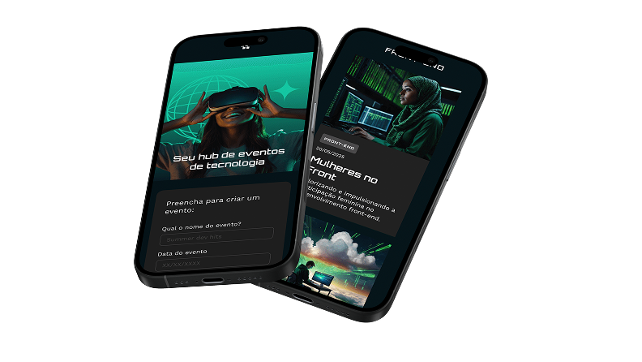

Stay focused
on what matters
Monitoramento em tempo real com alertas inteligentes para sua aplicação nunca sair do ar sem você saber.
Testar versão demo
Monitoramento em tempo real com alertas inteligentes para sua aplicação nunca sair do ar sem você saber.
Testar versão demo